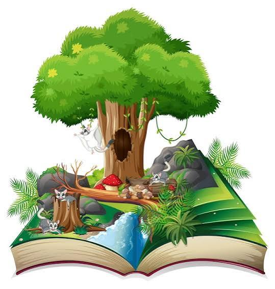

📝 Lenguaje y Naturaleza: Comunicar para Transformar
Cómo las palabras nos ayudan a entender y proteger nuestro entorno

📖 El lenguaje como herramienta
El lenguaje no sirve solo para comunicarnos cosas cotidianas: es también la herramienta con la que comprendemos el mundo, lo explicamos a los demás y construimos ideas nuevas. Cuando hablamos del clima, del agua o de los fenómenos naturales, las palabras nos ayudan a poner orden en lo que observamos y a compartirlo con claridad.
En este proyecto, el área de Lengua Castellana tiene un papel muy importante: es la que permite que todo lo que aprendimos sobre El Niño, Colombia y Bogotá quede registrado, bien explicado y al alcance de quien lo quiera leer. Escribir con claridad, orden y respeto por la verdad es también una forma de cuidar el entorno: porque lo que se conoce, se valora; y lo que se valora, se protege.
✍️ Cómo se trabajó la información
Para elaborar todo el contenido de esta página web, seguimos un proceso de investigación y redacción en varias etapas:
🔍 1. Buscar y leer
Leímos información de fuentes confiables: instituciones como el IDEAM, textos sobre el clima de Colombia, documentos sobre la historia de Bogotá y materiales educativos. No todo lo que se lee en internet es verdad: por eso buscamos siempre en sitios serios y reconocidos.
📝 2. Organizar y entender
Separamos las ideas principales: qué es El Niño, por qué afecta a Colombia, cómo ha cambiado el clima en la ciudad y qué podemos hacer. Organizamos la información de lo general a lo particular, para que cualquier persona, aunque no sepa del tema, pueda entenderlo.
📄 3. Escribir con claridad
Usamos un lenguaje sencillo pero preciso. Explicamos las palabras difíciles, no pusimos información sin saber de dónde venía y cuidamos que todo tuviera sentido. Escribir bien no es usar palabras complicadas: es hacer que el mensaje llegue claro.
🌐 4. Compartir en la web
Convertimos todo lo aprendido en páginas que cualquiera puede visitar. Las imágenes, los colores y la organización ayudan a que la lectura sea agradable y fácil de seguir. Así el conocimiento no se queda solo en el cuaderno: viaja y llega a más personas.
📚 Temas que se presentan en este proyecto
Toda la información que ves en las distintas páginas fue redactada siguiendo criterios de claridad, veracidad y orden. Aquí te resumimos los ejes principales:
- El fenómeno de El Niño: explicación sencilla de qué es, dónde nace y por qué cambia las lluvias y las temperaturas en el mundo y en Colombia. Se evitan tecnicismos innecesarios para que todos lo comprendan.
- Impacto en el país: cómo cada región de Colombia —la costa, los Andes, la Amazonía, los Llanos— recibe el fenómeno de manera distinta, con sus propios retos y realidades.
- Bogotá y su transformación: la historia de la sabana, el crecimiento de la ciudad y cómo el cambio en el entorno ha influido en el clima local. Se narra con respeto por la historia y con mirada al futuro.
- Educación y acción: propuestas concretas, realizables desde casa, el colegio y la comunidad. No se trata de grandes discursos, sino de acciones pequeñas que suman mucho.
💡 Reflexión final
Escribir sobre el medio ambiente nos enseña algo muy importante: no somos espectadores del mundo, somos parte de él. Cuando describimos cómo cambia el clima, también estamos describiendo nuestra propia relación con la tierra que nos sostiene.
Este proyecto no termina aquí. La verdadera tarea empieza cuando cierras esta página y llevas lo aprendido a tu casa, a tu familia, a tus amigos. Contar lo que sabes es la mejor forma de multiplicar el cambio.
"Las palabras pueden informar, pero también pueden inspirar. Que las tuyas inspiren a cuidar el mundo."
📌 Fuentes consultadas
Toda la información presentada en este proyecto se elaboró a partir de fuentes confiables:
- IDEAM — Instituto de Hidrología, Meteorología y Estudios Ambientales de Colombia
- Alcaldía Mayor de Bogotá — Documentos sobre historia y medio ambiente de la ciudad
- Ministerio de Ambiente y Desarrollo Sostenible
- Guía del proyecto educativo — "Super Niño: Bogotá en Alerta"
Este trabajo tiene fines educativos. Se recomienda consultar las fuentes oficiales para profundizar en los temas.